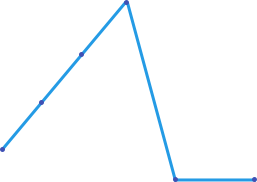
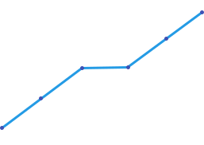

Kiedy odpocząć?
Odpoczynek jest rzeczą najważniejszą dla naszego progresu, niestety wiele osób o tym zapomina. Pierwsza zasada w treningu to brak kontuzji, często widzimy wspinaczy którzy trenują bardzo dużo, są w super formie i nagle ciach, kontuzja i regres. Lepiej zrobić mniej i się nie skontuzjować. Można to pokazać na prostym wykresie.
Wykres, pokazuje wspinacza, który ciężko trenuje przez 4 tygodnie przez co kontuzjuje się i traci swoją formę.

Wykres, na którym wspinacz odpoczywa w trzecim tygodniu odpuszczając połowę treningów.

Sposób 3:1
Jednym z dobrych sposobów jest 3:1 oznacza to trzy tygodnie treningów i jeden tydzień restowy ale nie oznacza on totalnego odpuszczenia treningów tylko połowy, jeżeli robiliśmy dwie sesje na chwytotablicy to robimy jedną.
Zazwyczaj kontuzjujemy się w czasie w którym pobijamy swoje rekordy np. nowy max na chwytotablicy lub dalsze sięgnięcia na kampusie, najczęściej wtedy dopada nas kontuzja. Zawsze warto przypomnieć sobie te wykresy i podejść do tego z zimną głową.